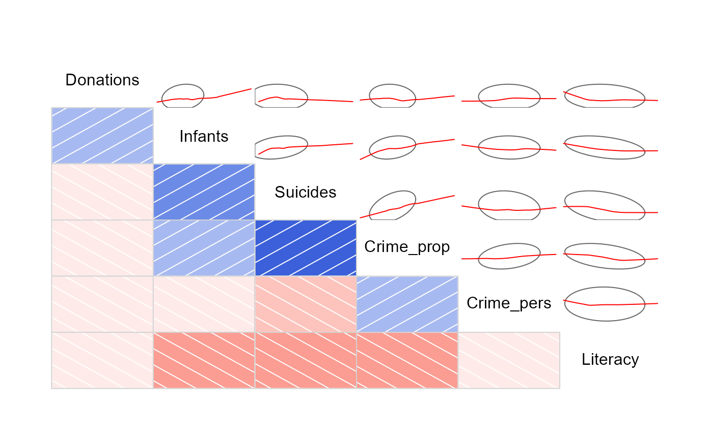

Data from A.-M. Guerry, "Essay on the Moral Statistics of France"
Guerry.RdAndre-Michel Guerry (1833) was the first to systematically collect and analyze social data on such things as crime, literacy and suicide with the view to determining social laws and the relations among these variables.
The Guerry data frame comprises a collection of 'moral variables' on the 86 departments of France around 1830. A few additional variables have been added from other sources.
Usage
data(Guerry)Format
A data frame with 86 observations (the departments of France) on the following 23 variables.
deptDepartment ID: Standard numbers for the departments, except for Corsica (200)
RegionRegion of France ('N'='North', 'S'='South', 'E'='East', 'W'='West', 'C'='Central'). Corsica is coded as NA
DepartmentDepartment name: Departments are named according to usage in 1830, but without accents. A factor with levels
AinAisneAllier...VosgesYonneCrime_persPopulation per Crime against persons. Source: A2 (Comptes general, 1825-1830)
Crime_propPopulation per Crime against property. Source: A2 (Compte general, 1825-1830)
LiteracyPercent Read & Write: Percent of military conscripts who can read and write. Source: A2
DonationsDonations to the poor. Source: A2 (Bulletin des lois)
InfantsPopulation per illegitimate birth. Source: A2 (Bureau des Longitudes, 1817-1821)
SuicidesPopulation per suicide. Source: A2 (Compte general, 1827-1830)
MainCitySize of principal city ('1:Sm', '2:Med', '3:Lg'), used as a surrogate for population density. Large refers to the top 10, small to the bottom 10; all the rest are classed Medium. Source: A1. An ordered factor with levels
1:Sm<2:Med<3:LgWealthPer capita tax on personal property. A ranked index based on taxes on personal and movable property per inhabitant. Source: A1
CommerceCommerce and Industry, measured by the rank of the number of patents / population. Source: A1
ClergyDistribution of clergy, measured by the rank of the number of Catholic priests in active service / population. Source: A1 (Almanach officiel du clergy, 1829)
Crime_parentsCrimes against parents, measured by the rank of the ratio of crimes against parents to all crimes– Average for the years 1825-1830. Source: A1 (Compte general)
InfanticideInfanticides per capita. A ranked ratio of number of infanticides to population– Average for the years 1825-1830. Source: A1 (Compte general)
Donation_clergyDonations to the clergy. A ranked ratio of the number of bequests and donations inter vivios to population– Average for the years 1815-1824. Source: A1 (Bull. des lois, ordunn. d'autorisation)
LotteryPer capita wager on Royal Lottery. Ranked ratio of the proceeds bet on the royal lottery to population— Average for the years 1822-1826. Source: A1 (Compte rendus par le ministre des finances)
DesertionMilitary desertion, ratio of the number of young soldiers accused of desertion to the force of the military contingent, minus the deficit produced by the insufficiency of available billets– Average of the years 1825-1827. Source: A1 (Compte du ministere du guerre, 1829 etat V)
InstructionInstruction. Ranks recorded from Guerry's map of Instruction. Note: this is inversely related to
Literacy(as defined here)ProstitutesProstitutes in Paris. Number of prostitutes registered in Paris from 1816 to 1834, classified by the department of their birth Source: Parent-Duchatelet (1836), De la prostitution en Paris
DistanceDistance to Paris (km). Distance of each department centroid to the centroid of the Seine (Paris) Source: calculated from department centroids
AreaArea (1000 km^2). Source: Angeville (1836)
Pop18311831 population. Population in 1831, taken from Angeville (1836), Essai sur la Statistique de la Population francaise, in 1000s
Details
Note that most of the variables (e.g., Crime_pers) are scaled so that 'more is better' morally.
Values for the quantitative variables displayed on Guerry's maps were taken from Table A2 in the English translation of Guerry (1833) by Whitt and Reinking. Values for the ranked variables were taken from Table A1, with some corrections applied. The maximum is indicated by rank 1, and the minimum by rank 86.
Source
Angeville, A. (1836). Essai sur la Statistique de la Population fran?aise Paris: F. Doufour.
Guerry, A.-M. (1833). Essai sur la statistique morale de la France Paris: Crochard. English translation: Hugh P. Whitt and Victor W. Reinking, Lewiston, N.Y. : Edwin Mellen Press, 2002.
Parent-Duchatelet, A. (1836). De la prostitution dans la ville de Paris, 3rd ed, 1857, p. 32, 36
References
Dray, S., & Jombart, T. (2011). Revisiting Guerry's data: Introducing spatial constraints in multivariate analysis. Annals of Applied Statistics, 5, 2278-2299
Brunsdon, C. and Dykes, J. (2007). Geographically weighted visualization: Interactive graphics for scale-varying exploratory analysis. Geographical Information Science Research Conference (GISRUK 07), NUI Maynooth, Ireland, April, 2007.
Friendly, M. (2007). A.-M. Guerry's Moral Statistics of France: Challenges for Multivariable Spatial Analysis. Statistical Science, 22, 368-399.
Friendly, M. (2007). Data from A.-M. Guerry, Essay on the Moral Statistics of France (1833), https://www.datavis.ca/gallery/guerry/guerrydat.html.
See also
Angeville for other analysis variables
Examples
library(car)
#> Loading required package: carData
data(Guerry)
# Is there a relation between crime and literacy?
# Plot personal crime rate vs. literacy, using data ellipses.
# Identify the departments that stand out
set.seed(12315)
with(Guerry,{
dataEllipse(Literacy, Crime_pers,
levels = 0.68,
ylim = c(0,40000), xlim = c(0, 80),
ylab="Pop. per crime against persons",
xlab="Percent who can read & write",
pch = 16,
grid = FALSE,
id = list(method="mahal", n = 8, labels=Department, location="avoid", cex=1.2),
center.pch = 3, center.cex=5,
cex.lab=1.5)
# add a 95% ellipse
dataEllipse(Literacy, Crime_pers,
levels = 0.95, add=TRUE,
ylim = c(0,40000), xlim = c(0, 80),
lwd=2, lty="longdash",
col="gray",
center.pch = FALSE
)
# add the LS line and a loess smooth.
abline( lm(Crime_pers ~ Literacy), lwd=2)
lines(loess.smooth(Literacy, Crime_pers), col="red", lwd=3)
}
)
# A corrgram to show the relations among the main moral variables
# Re-arrange variables by PCA ordering.
library(corrgram)
corrgram(Guerry[,4:9], upper=panel.ellipse, order=TRUE)
